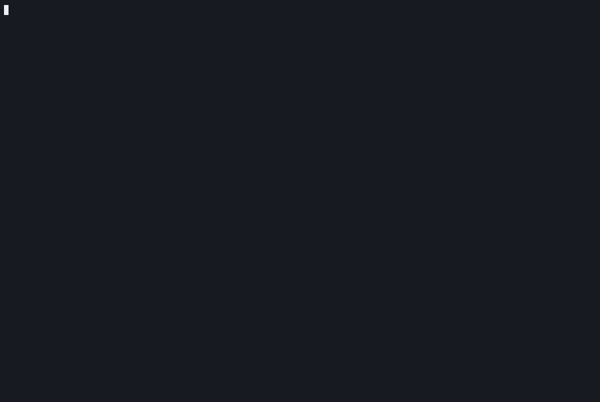

you@team ~ $ yeaboi
██╗ ██╗███████╗ █████╗ ██████╗ ██████╗ ██╗ ╚██╗ ██╔╝██╔════╝██╔══██╗██╔══██╗██╔═══██╗██║ ╚████╔╝ █████╗ ███████║██████╔╝██║ ██║██║ ╚██╔╝ ██╔══╝ ██╔══██║██╔══██╗██║ ██║██║ ██║ ███████╗██║ ██║██████╔╝╚██████╔╝██║ ╚═╝ ╚══════╝╚═╝ ╚═╝╚═════╝ ╚═════╝ ╚═╝
A team lead's best friend.
yeaboi decomposes a project into epics, stories, tasks, and a sprint plan — then runs the standups, retros, 1:1s, and delivery reports around them. All from your terminal.
uv tool install yeaboi
pipx install yeaboi
$ yeaboi # pick a mode
Everything a lead does between planning and delivery, each its own screen in the TUI. Read-only sources plug in when you have them; skip anything you don't.
Turn a project description into epics, stories, tasks, and a sprint plan — then push straight to Jira or Azure DevOps.
Read your team's real velocity and history first, so estimates and capacity are calibrated to how you actually deliver.
Detect what everyone shipped, score sprint progress, and deliver the summary — on a schedule, even when yeaboi is closed.
Open a board your whole team joins from any browser on the network. Cards, reactions, a shared timer — then AI action items.
Prep and write up 1:1s, and synthesize six-month reviews from each engineer's real delivery history.
Turn a sprint or a whole quarter of delivered work into a business-ready summary and a slide deck for stakeholders.
$ yeaboi --dry-run # from description to sprint plan
A full-screen terminal UI — no browser tab, no web app. Plan, edit stories, adjust sprints, and push to your tracker without leaving the shell.

From project description to sprint plan in under a minute.
$ # three lines to your first plan
Installs in its own isolated environment and pulls the full dependency tree from PyPI. Python 3.11+.
uv tool install yeaboi — or pipx install yeaboiyeaboi --setup — add your API keyyeaboi — launch the interactive TUIWorks with Anthropic Claude by default, plus OpenAI, Google, and AWS Bedrock. Optional extras: uv tool install "yeaboi[voice]" for offline voice input, or "yeaboi[all-providers]".